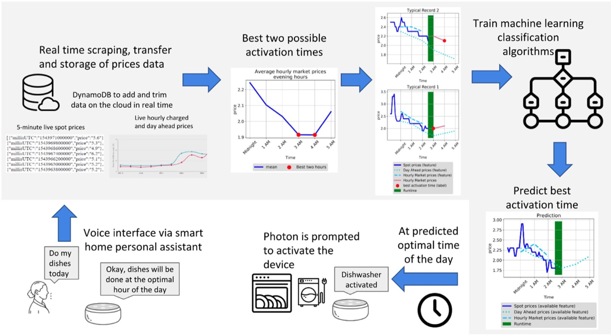
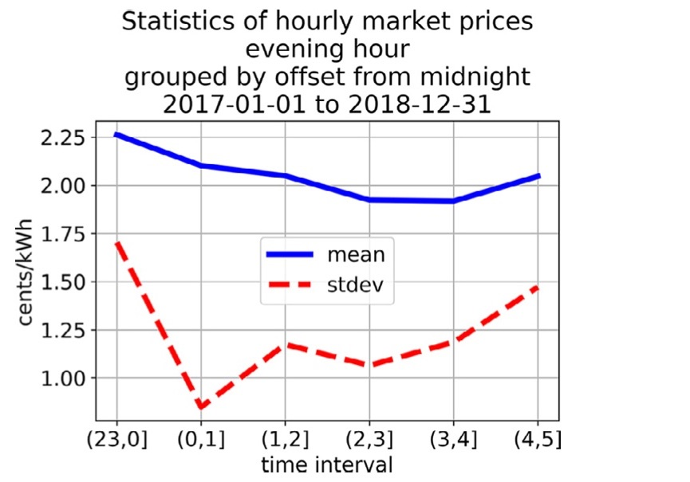
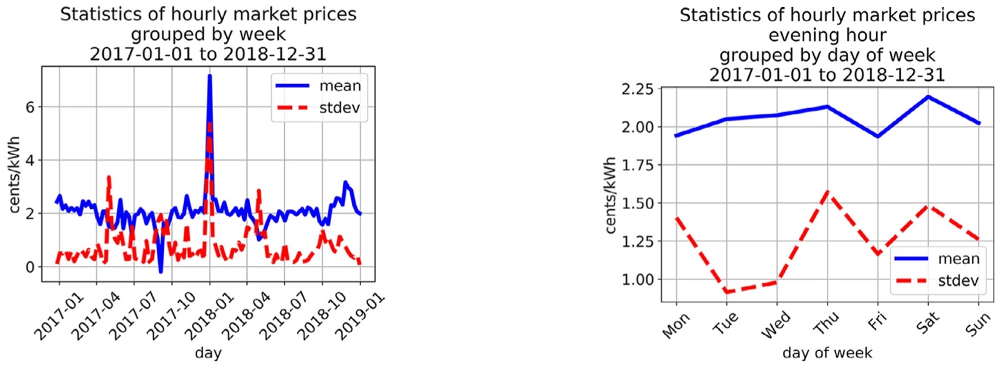
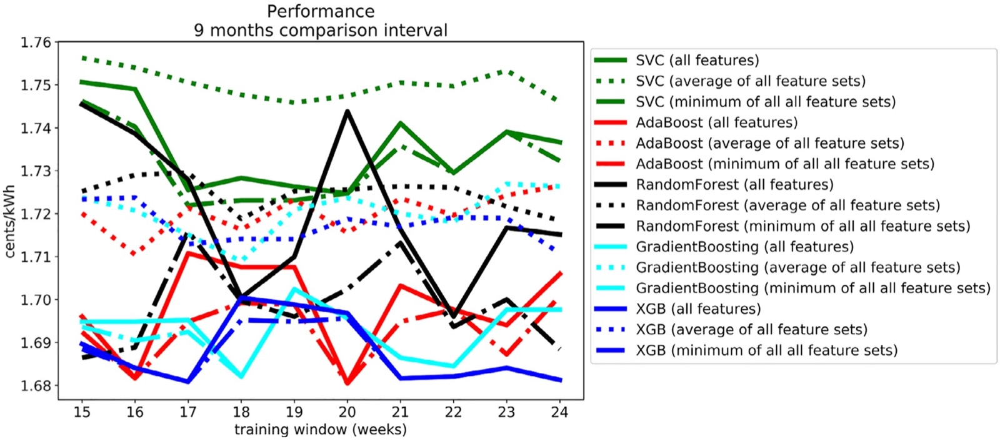
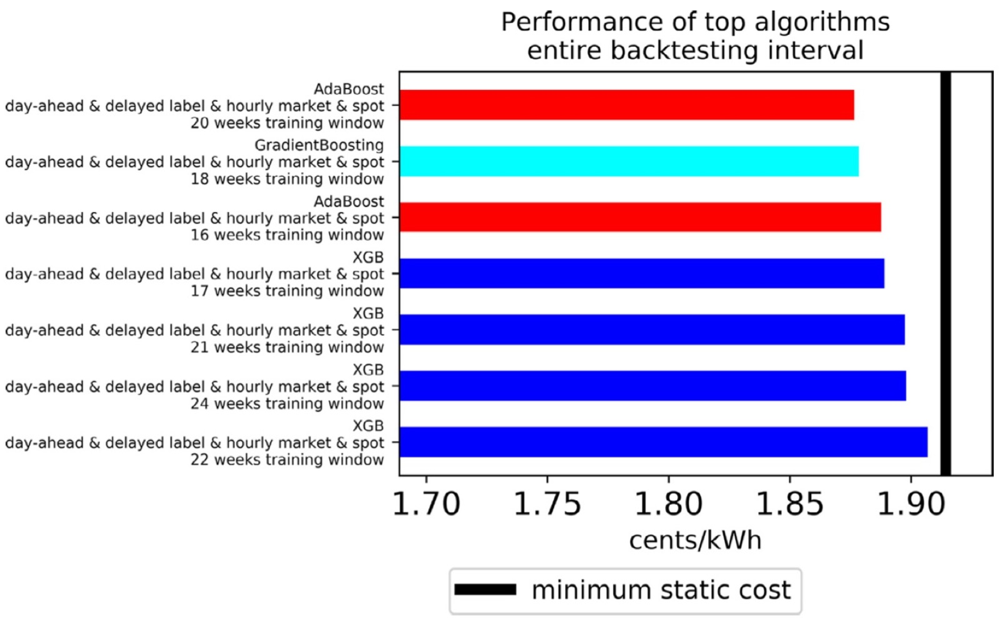
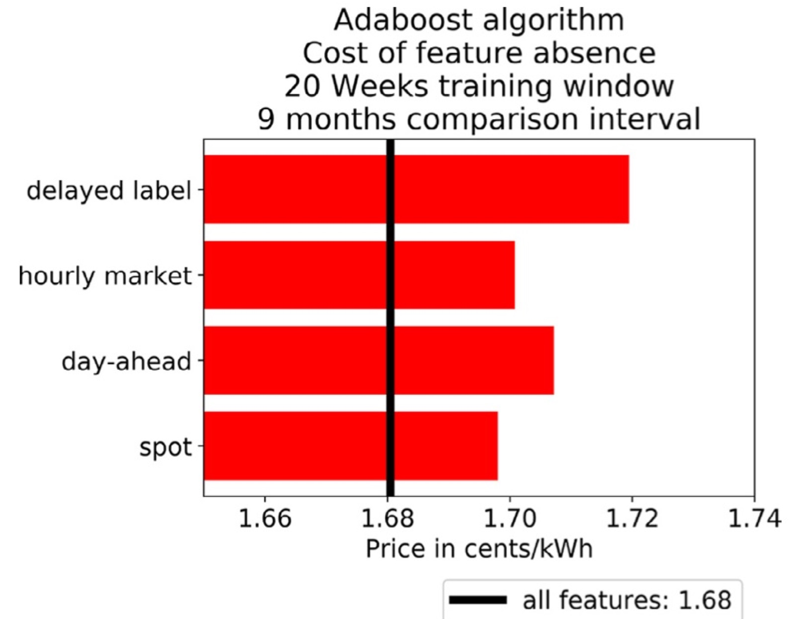
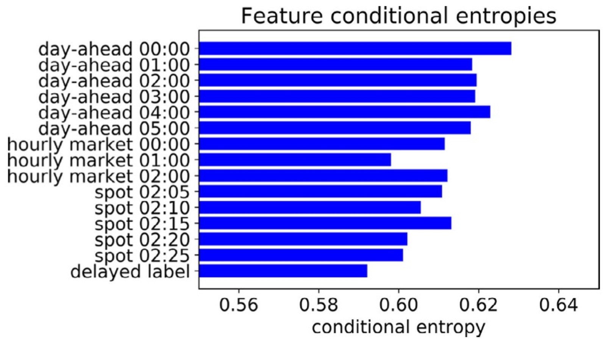
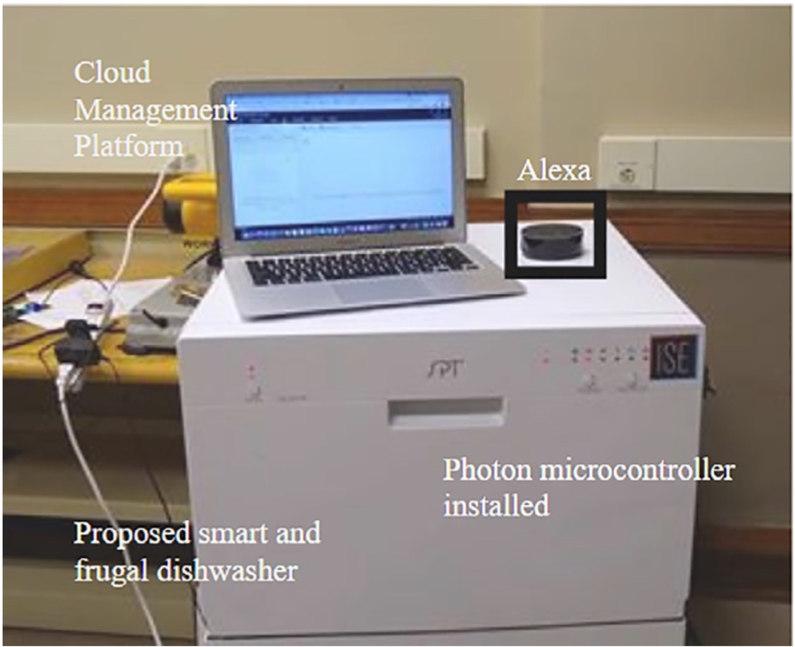

Abstract
We pose and study a scheduling problem for an electric load to develop an Internet of Things (IoT) control system for power appliances, which takes advantage of real-time dynamic energy pricing. Using historical pricing data from a large U.S. power supplier, we study and compare several dynamic scheduling policies, which can be implemented in a smart home to activate a major appliance (dishwasher, washing machine, clothes dryer) at an optimal time of the day, to minimize electricity costs. We formulate our scheduling task as a supervised machine learning classification problem which activates the load during one of two preferred time bins. The features used in the machine learning problem are hourly market, spot and day-ahead prices along with delayed label of the prior day. We find that boosting tree-based algorithms outperform any other classification approach with measurable reduction of energy costs over certain types of naive and static policies. We observe that the delayed label has most predictive power across features, followed, on average, by spot, hourly market, and day-ahead energy prices. We further discuss implementation issues using a microcontroller system coupled with cloud-based serverless computing and dynamic data storage. Our test system includes an interactive voice interface via an intelligent personal assistant.
Core contributions
- 1Scheduling as classificationChoosing when to run an appliance becomes a yes/no question: will the next hour be cheaper than this one?
- 2750 configurations comparedFive classifiers, ten training windows and fifteen feature sets, tested on two years of ComEd prices.
- 3Boosting winsAdaBoost with 20 weeks of training data and all price features gave the lowest cost, about 2% below the best fixed schedule.
- 4What the prices tell usYesterday’s outcome (the delayed label) is the most informative feature, and live spot prices add value that most earlier work ignored.
- 5A working prototypeA dishwasher retrofitted with a Wi-Fi microcontroller, run on AWS serverless computing, with an Alexa voice interface.
- 6Retrofit, not replaceThe design modifies existing appliances, so it can be added to almost any home cheaply.
Method
1Price data
We used real-time prices from ComEd, a large Illinois utility, from June 2016 to December 2018. ComEd publishes a spot price every 5 minutes; customers pay the hourly market price (the average of the 12 spot prices in that hour), and a day-ahead estimate is posted the day before. We focused on evening loads (11 PM to 5 AM) with a 30-minute run time, such as a dishwasher’s rapid cycle.

Show how prices vary by week and weekday (paper Figs. 7–8)

2Scheduling as classification
Each night the system must decide: start in the earlier of the two cheapest hours, or wait for the later one? The label for each night is which of the two hours turned out cheaper. Our cost metric is the average price paid per night over a backtesting period, compared with the best fixed policy (always 4 AM) and with an omniscient scheduler that always knows the cheaper hour.
3Models and features
We compared five classifiers (AdaBoost, gradient boosting, XGBoost, random forest and SVM) with training windows from 15 to 24 weeks and every combination of four feature sets: hourly market, spot, day-ahead prices, and the delayed label (whether the 4 AM hour was cheaper the night before).
Results
1750 configurations
- Boosting is best: AdaBoost, XGBoost and gradient boosting lead, followed by random forest and then SVM.
- Best setup: AdaBoost, 20 weeks (about 5 months) of training data and all four feature sets.

2Two-year backtest
- Beats the best fixed schedule: about 2% lower cost in both the 9-month comparison and the full 2017–2018 backtest.
- Small but free savings: the policy is computed once per evening, so the cost per user is negligible.
| Period | AdaBoost | Best fixed (4 AM) | Omniscient | Saving |
|---|---|---|---|---|
| 9-month comparisoncents/kWh | 1.680 | 1.715 | 1.608 | 2.04% |
| Full backtest, 2017–2018cents/kWh | 1.876 | 1.914 | 1.771 | 1.99% |

Analysis
1Which prices matter
- Yesterday predicts today: the delayed label leaves the least uncertainty about the label, and dropping it raises cost the most.
- Spot prices are worth watching: they carry information that most comparable studies leave out.

Show the conditional entropy of each feature (paper Fig. 12)

Prototype
We built an end-to-end working system around a countertop dishwasher. A Particle Photon Wi-Fi microcontroller with a relay shield was wired into the dishwasher’s control boards to power it on, select the wash cycle and start it. AWS Lambda functions, triggered by CloudWatch, scrape new prices every 5 minutes, store them in DynamoDB and S3, and evaluate the scheduling policy. An Alexa skill lets the user say, for example, “Alexa, do my dishes later on eco mode”; the dishes are then washed at the predicted cheapest hour.

In the news
- New model shows how to make smart homes more frugalUIUC News, April 2021
BibTeX
@article{kaur2021machine,
title = {Machine learning and price-based load scheduling for an
optimal {IoT} control in the smart and frugal home},
author = {Kaur, Rachneet and Schaye, Clara and Thompson, Kevin and
Yee, Daniel C and Zilz, Rachel and Sreenivas, RS and
Sowers, Richard B},
journal = {Energy and AI},
volume = {3},
pages = {100042},
year = {2021},
publisher = {Elsevier},
doi = {10.1016/j.egyai.2020.100042}
}Acknowledgments
The authors would like to thank John Nguyen for assisting in the implementation of these ideas.